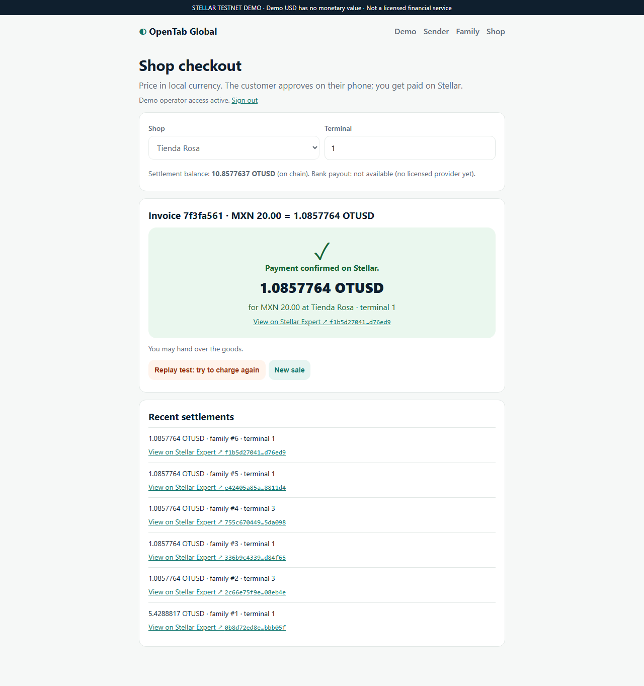

Money arrives. Spending it shouldn't need a cash trip.
Remittances often become cash at a pickup counter before they can buy food or medicine.
Many recipients have phones but patchy or expensive mobile data.
Senders can't easily earmark support for everyday essentials.
Neighbourhood shops extend informal credit and carry the risk.
A household story
Maria works in Toronto and supports her mother Rosa in Oaxaca. Rosa buys groceries at the shop down her street.
With OpenTab, Rosa scans the shop's QR, approves on her phone with no data, and the shop is paid on Stellar
seconds later. No pickup counter, no cash to carry.
Illustrative household story. We have not yet run user interviews or pilots.
Problem Space 3 · Transnational Households
OpenTab Global
A shared family spending balance on Stellar, spendable at local shops, approved on a phone with no internet.
Sender · onlineFundsthe family balance
Shop · onlineInvoice QRlocal price + exact charge
Phone · offlineSignsthat exact purchase
Shop · onlineSubmitsthe approval
StellarPays the shoponce; replays refused

Shop: “Payment confirmed” only after Stellar confirms (real Testnet tx)